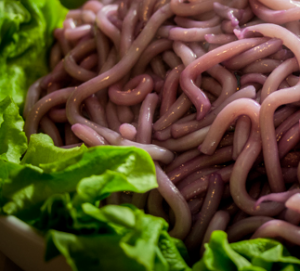

Klingon Gagh

The Way of Gagh
Experience an authentic taste of Klingon culture with our Gagh,
a traditional delicacy of serpentine creatures, served live.
This boldly exotic dish offers a unique textural journey,
each wriggling morsel bursting with robust, meaty flavors.
Served chilled, our Gagh is expertly seasoned to accentuate its
natural essence, creating an exciting dining adventure for
the brave and the curious. A dish not for the faint-hearted
but for the true connoisseur of interstellar cuisine,
Gagh embodies the fierce spirit of Klingon gastronomy.
Challenge your palate and indulge in this esteemed Klingon
specialty. Qapla!
Ingredients:
- 200 grams of vermicelli noodles
- 2 tablespoons of sesame oil
- 2 cloves of garlic, finely chopped
- 1 tablespoon of soy sauce
- 1 tablespoon of oyster sauce
- 1/2 teaspoon of black pepper
- 1/2 teaspoon of chili flakes (optional)
- 2 spring onions, finely chopped for garnish
Directions:
- Soak the vermicelli noodles in warm water for about 10 minutes or until they become soft. Drain and set aside.
- Heat the sesame oil in a large pan over medium heat. Add the chopped garlic and sauté until it's fragrant but not browned.
- Add the softened vermicelli noodles to the pan. Toss them around in the oil to ensure they're fully coated.
- Add the soy sauce, oyster sauce, black pepper, and chili flakes (if using) to the pan. Stir well to evenly distribute the flavors.
- Cook for another 2-3 minutes until the noodles are heated through and have absorbed the flavors of the sauces and spices.
- Remove the pan from the heat. Plate your "Gagh", garnishing it with the chopped spring onions.
- Serve your "Gagh" immediately for the full "live" effect, and enjoy this playful nod to Klingon cuisine!
Please note that in the Star Trek universe, Gagh is a dish of live serpent worms.
This recipe is a fun and safe interpretation of that concept,
using Earth-based, edible ingredients.